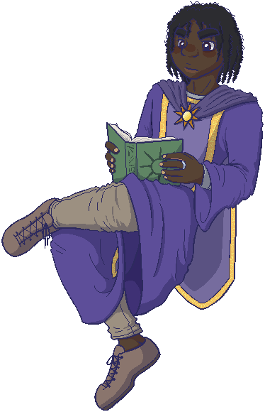

The freeshell Solar Runes is now available! It was made for Etc. Jam 2026. It was made to pair with the balloon Celestial Emblem, but this time it's more that they share a theme rather than directly sharing an art style, etc.

When I was planning for Etc. Jam this year, I thought that maybe I would try making a quick balloon, and then two super simple freeshells to match it. That way you could have options! And that got me thinking, maybe I could open it up as a collab of sorts, and others could join in if the idea interested them... So I made a post on the Ukagaka Dream Team forum, setting out plans for an open collaboration.
Multiple folks have participated in this, and they've made some really cool stuff, so be sure to check out the jam results!
As for me, you might notice that I'm only releasing one freeshell! Why is that? Well... I got so invested in adding pieces to this one, honestly. He was just so much fun to work on! I wanted a few arms, and then I drew so many expression pieces, and then I kept having ideas for dressups, and then I really wanted his foot to kick, and then I thought it would be fun to animate a few spells, and... well. Somehow, I got all of that done, but it did take the entire 4 days of jam I had left after finishing the balloon.
I actually want to add in some more stuff after jam if I get a chance, but we'll see how it goes. it might be a while, I'm not sure! Art energy is fickle and it often takes a jam to get me to sit down and do it.
I'm really happy with how this shell came out though. He has so much expression. When I first imagined him he was actually going to be pretty stern and aloof, but I figured that if I made all the usual expressions, you could still make him stern and aloof by just limiting yourself to specific surfaces that evoke that feeling. So, there are lots of ways to play him! That's the beauty of freeshells, really. Don't feel like you have to use all the expressions! (Especially since there are more than 900 combinations, apparently? There's only one more slot for eyes left, how did this happen...)
If I can coax myself into it, I might make that other freeshell idea at some point, we'll see! For now, I've got to get this posted and the freeshell submitted before the jam timer has run all the way down. I hope you'll try him out and see the spells and such for yourself! (Bring spelunking equipment if you go into surfaces.txt though... I think I used pretty good techniques, but the sheer amount of stuff in there is a lot.)